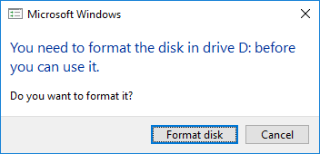

The NVIDIA® Jetson Nano™ Developer Kit is a small AI computer for makers, learners, and developers. After following along with this brief guide, you’ll be ready to start building practical AI applications, cool AI robots, and more.
Download
Initially, a computer with Internet connection and the ability to flash your microSD card is also required. Downloading the image may take a considerable amount of time, depending on your Internet speed. We recommend that you begin downloading the NVIDIA DLI AI Jetson Nano SD Card Image v1.1.1 immediately so that it can work in the background while you explore the rest of the setup or course information.
Included In The Box
Your Jetson Nano Developer Kit box includes:
Jetson Nano Developer Kit
Small paper card with quick start and support information
Folded paper stand
For This Course, You’ll Also Need:
microSD Memory Card (32GB UHS-I minimum)
5V 4A Power Supply with 2.1mm DC barrel connector
2-pin Jumper
Compatible camera:
Logitech C270 USB Webcam
USB cable (Micro-B to Type-A)
----
Prepare For Setup
Items For Getting Started
MicroSD Card
The Jetson Nano Developer Kit uses a microSD card as a boot device and for main storage. It’s important to have a card that’s fast and large enough for your projects; the minimum recommended for this course is a 32GB UHS-I card.
See the instructions in the "Write Image to the microSD Card" lesson that follows to flash your microSD card according to the type of computer you are using: Windows, Mac, or Linux.
5V 4A Power Supply With 2.1mm DC Barrel Connector
For this course, the 5V 4A DC barrel jack power supply is required. Although it is possible to power the Jetson Nano with a smaller microUSB supply, this is not robust enough for the high GPU compute load we require for our projects. In addition, you will need the microUSB port available as a direct connection to your computer for this course.
The barrel jack must be 5.5mm OD x 2.1mm ID x 9.5mm length, center-positive. As an example of a good power supply, NVIDIA has validated Adafruit’s 5V 4A (4000mA) switching power supply - UL Listed.
2-Pin Jumper
To specify use of the barrel-type power supply on the Jetson Nano Developer Kit, a 2-pin jumper is required. This is an inexpensive item available at many outlets.
Logitech C270 USB Webcam
You'll need a camera to capture images in the course projects. As an example of a compatible camera, NVIDIA has verified that the Logitech C270 USB Webcam works with these projects. The ability to position the camera easily for capturing images hands-free makes this a great choice. Some other USB webcams may also work with the projects. If you already have one on hand, you could test it as an alternative.
USB Cable (Micro-B To Type-A)
You'll also need a Micro USB to USB-A cable to directly connect your computer to the Jetson Nano Developer Kit's Micro USB port. The cable must be capable of data transfers, rather than only designed to power a device. This is a common cable available at many outlets if you don't already have one on hand.
The complete hardware package is also available from Sparkfun either with the Jetson Nano included or without the Jetson Nano included.
----
Write Image To The MicroSD Card
To prepare your microSD card, you’ll need a computer with Internet connection and the ability to read and write SD cards, either via a built-in SD card slot or adapter.
If you have not already done so, download the DLI AI Jetson Nano SD Card Image to flash from the Introduction and Download page, and note where it was saved on the computer.
Write the image to your microSD card by following the instructions below according to the type of computer you are using: Windows, Mac, or Linux.
After your microSD card is ready, proceed to set up your developer kit.
Format your microSD card using SD Memory Card Formatter from the SD Association.
Download, install, and launch SD Memory Card Formatter for Windows.
Select card drive
Select “Quick format”
Leave “Volume label” blank
Click “Format” to start formatting, and “Yes” on the warning dialog
Use Etcher to write the Jetson Nano Developer Kit SD Card Image to your microSD card
Download, install, and launch Etcher.
Click “Select image” and choose the zipped image file downloaded earlier.
Insert your microSD card if not already inserted.
Click Cancel (per this explanation) if Windows prompts you with a dialog like this:
Click “Select drive” and choose the correct device.
Click “Flash!” It will take Etcher about 10 minutes to write and validate the image if your microSD card is connected via USB3.
After Etcher finishes, Windows may let you know it doesn’t know how to read the SD Card. Just click Cancel and remove the microSD card.

You can either write the SD card image using a graphical program like Etcher, or via command line.
Etcher Instructions
Do not insert your microSD card yet.
Download, install, and launch Etcher.
Click “Select image” and choose the zipped image file downloaded earlier.
Insert your microSD card. Click Ignore if your Mac shows this window:
If you have no other external drives attached, Etcher will automatically select the microSD card as target device. Otherwise, click “Select drive” and choose the correct device.
Click “Flash!” Your Mac may prompt for your username and password before it allows Etcher to proceed
It will take Etcher about 10 minutes to write and validate the image if your microSD card is connected via USB3.
After Etcher finishes, your Mac may let you know it doesn’t know how to read the SD Card. Just click Eject and remove the microSD card.
Command Line Instructions
Do not insert your microSD card yet. Waiting will help you discover correct disk device name in steps below.
Open the Terminal app:
Use this command to list any external disk devices already attached to your Mac:
diskutil list external | fgrep '/dev/disk'
For example, if you already have a USB drive attached to your Mac, the result will look similar to this:
Insert your microSD card. Click Ignore if your Mac shows this window:
Use the same command as before to list external disk devices. The newly listed disk device is the microSD card (/dev/disk2 in this example):
Use this command to remove any existing partitions from the microSD card, ensuring MacOS will let you write to it. BE VERY CAREFUL to specify the correct disk device.
bash
sudo diskutil partitionDisk /dev/disk<n> 1 GPT "Free Space" "%noformat%" 100%
For example:
Use this command to write the zipped SD card image to the microSD card. Note the use of /dev/rdisk instead of /dev/disk:
bash
/usr/bin/unzip -p ~/Downloads/jetson_nano_devkit_sd_card.zip | sudo /bin/dd of=/dev/rdisk<n>bs=1m
For example:
There will be no indication of progress (unless you signal with CTRL-t). When the dd command finishes, your Mac will let you know it cannot read the microSD card. Just click Eject:
You can either write the SD card image using a graphical program like Etcher, or via command line.
Etcher Instructions
Download, install, and launch Etcher.
Click “Select image” and choose the zipped image file downloaded earlier.
Insert your microSD card. If you have no other external drives attached, Etcher will automatically select the microSD card as target device. Otherwise, click “Change” and choose the correct device.
Click “Flash!” Your OS may prompt for your username and password before it allows Etcher to proceed.
It will take Etcher 10-15 minutes to write and validate the image if your microSD card is connected via USB3.
After Etcher finishes, eject the SD Card using Files application:
Physically remove microSD card from the computer.
Command Line Instructions
Open the Terminal application by pressing Ctrl+Alt+Del
Insert your microSD card, then use a command like this to show which disk device was assigned to it:
bash
dmesg | tail | awk '$3 == "sd" {print}'
In this example, we can see the 16GB microSD card was assigned /dev/sda:
Use this command to write the zipped SD card image to the microSD card:
bash
/usr/bin/unzip -p ~/Downloads/jetson_nano_devkit_sd_card.zip | sudo /bin/dd of=/dev/sd<x> bs=1M status=progress
For example:
When the dd command finishes, eject the disk device from the command line:
bash
sudo eject /dev/sd<x>
Physically remove microSD card from the computer.
----
Setup And First Boot
Headless Device Mode
For this course, we are running the Jetson Nano Developer Kit in a "headless" configuration. That means you do not hook up a monitor directly to the Jetson Nano Developer Kit. This method conserves memory resources on the Jetson Nano and has the added benefit of eliminating the requirement for extra hardware, i.e. a monitor, keyboard, and mouse.
In addition, we will further simplify the configuration by using "USB Device Mode". In this mode, your Jetson Nano Developer Kit connects directly to your computer through a USB cable. This eliminates the need for a network connection on the Jetson Nano, as well as the need to determine the IP address on your network. It is always 192.168.55.1:8888 in this mode.
In the steps that follow, you will boot the Jetson Nano in the minimum configuration (without a camera) to make sure it boots correctly from the microSD card you flashed with the DLI course image.
Setup Steps
Unfold the paper stand and place inside the developer kit box.
Set the developer kit on top of the paper stand.
Insert the microSD card (with system image already written to it) into the slot on the underside of the Jetson Nano module.
Insert the 2-pin jumper across the 2-pin connector, J48, located next to the MIPI CSI camera connector. This enables the DC barrel power supply.
Connect your DC barrel jack power supply (5V/4A). The Jetson Nano Developer Kit will power on and boot automatically.
A green LED next to the Micro-USB connector will light as soon as the developer kit powers on. Wait about 30 seconds. Then connect the USB cable from the Micro USB port on the Jetson Nano Developer Kit to the USB port on your computer.
Logging Into The JupyterLab Server
Open the following link address : 192.168.55.1:8888
The JupyterLab server running on the Jetson Nano will open up with a login prompt the first time.
Enter the password: dlinano
You will see this screen. Congratulations!
Headless Device Mode Setup For Jetson Nano Demonstration
Troubleshooting
The LED does not light up when the DC barrel jack power supply is connected.
Check to be sure you have shorted the two pins on the J48 header with a jumper.
The LED lights up, but I cannot access the JupyterLab server from my browser.
Try a different browser.
I cannot access the JupyterLab server from any browser.
Check your computer to see if any new USB devices are recognized when plugging in the USB cable to your computer
If on Windows, check ?Device Manager? to see if any new device was added.
My computer does not recognize Jetson Nano when connected.
Check your USB cable to see if it is enabled for data transfer.
You can test it by connecting the Micro-B end of the USB cable to some other USB peripheral such as tablet, Kindle, or other device that communicates over a USB Micro-B port.
My USB cable seems good, but my computer does not recognize Jetson Nano.
Check if your Jetson Nano Developer Kit is properly booting by connecting it to a TV through an HDMI cable. See if the TV displays the NVIDIA logo when booted, and eventually displays the Ubuntu desktop.
My Jetson Nano does not show anything on the TV when booting with the TV attached.
Check if you have inserted your microSD card all the way into the microSD card slot. You should hear a small click sound.
The microSD card is fully inserted, but my Jetson Nano does not boot properly.
Go back to ?Write Image To The MicroSD Card? to reflash your SD card.
----
Camera Setup
Now that you've verified that your system can boot to your Jetson Nano Developer Kit with the microSD card, let's add the camera! Power down the Jetson Nano Developer Kit by unplugging the power. Then connect the camera using the instructions below.
Connecting The Logitech C270 Webcam (Recommended Configuration)
This is very straightforward. Just plug in the USB connector into any of the Jetson Nano Developer Kit USB ports.
(Alternate Configuration) Raspberry Pi V2 Camera
If you want to try this lab with a RasBerry Pi v2 Camera, you will need to connect to the MIPI CSI port. Begin by unlatching the MIPI CSI connector. This loosens the "grip" of the connector by just a small amount.
Insert the ribbon cable of the camera so that the metal side faces into the Nano board.
Latch the connector with a gentle push downward on the sides of the plastic. The ribbon cable should be securely held by the connector
Remove the protective film from the lens of the camera.
Other Cameras
Other cameras may also work with your Jetson Nano Developer Kit. You'll need to test them to find out. If you have another camera on hand, such as a USB webcam, feel free to give it a try using the "Hello Camera" test notebooks in the next lesson.
Raspberry Pi Camera Connection Demonstration
Troubleshooting
The camera and JupyterLab appear "frozen"
If using a Raspberry Pi Camera Module v2, check to ensure it does not touch any of the metal parts (headers, pads, t erminals, ports) of the Jetson Nano Developer Kit board as this may cause an electrical short.
JupyterLab is working, but I cannot execute a cell to run my camera. I get an error or it "hangs"
The camera may have previously been assigned but not released.
Shutdown the kernel for the notebook using the pulldown menu at the top of JupyterLab.
Open a terminal window from the Launch page (if no Launch page, click the '+' icon)
enter sudo systemctl restart nvargus-daemon in the terminal window. You will be prompted for the password, which is dlinano
Restart your notebook
----
Hello Camera
Now with the camera attached, boot the system using headless Device Mode as you did before.
Boot With Camera Attached
Disconnect the USB cable from the computer if it is still attached
Connect your DC barrel jack power supply (5V/4A). The Jetson Nano Developer Kit will power on and boot automatically.
Wait about 30 seconds. Then connect the USB cable from the Micro USB port on the Jetson Nano Developer Kit to the USB port on your computer.
Open a browser window on your computer and enter the address to the Jetson Nano JupyterLab server: 192.168.55.1:8888
The JupyterLab server running on the Jetson Nano will open up.
Open The Hello Camera Notebook
The JupyterLab interface is a dashboard that provides access to the Jupyter interactive notebooks and the operating system for Jetson Nano. The first view you'll see includes a directory tree on the left and a "Launcher" page on the right. To open the "Hello Camera" notebook:
Navigate to the nvdli-nano folder with a double-click
Navigate to the hello_camera folder in the same way
If you are testing a USB webcam camera such as the Logitech C270, double-click the usb_camera.ipynb notebook to open it. If you are testing a CSI camera, double-click the csi_camera.ipynb instead.
Find out more about JupyterLab in the next section. If you are already familiar with JupyterLab features, go ahead and jump right in! When you're satisfied that your camera works correctly, return here for project instructions.
----
JupyterLab
For this course, your Jetson Nano has been configured to run a JupyterLab server on port 8888. When you boot the system and open a browser to the Jetson Nano IP address at that port, you see the JupyterLab interface.
JupyterLab Interface
The JupyterLab Interface is a dashboard that provides access to interactive iPython notebooks, as well as the folder structure for your Jetson Nano and a terminal window into the Ubuntu operating system. The first view you'll see includes a menu bar at the top, a directory tree in the left sidebar, and a main work area that is initially open to the "Launcher" page.
Complete details for all the features and menu actions available can be found in the JupyterLab Interface document. Here are some key capabilities that will be especially useful in this course:
File browser:
The file browser in the left sidebar allows navigation through the Jetson Nano file structure. Double-clicking on a notebook or file opens it in the main work area.
iPython notebooks:
The interactive notebooks used in this course have an ".ipynb" file extension. When a notebook is double-clicked from the file browser, it will open in the main work area and its process will start. The notebooks consist of text and code "cells". When a code cell is "run", by clicking the run button at the top of the notebook or the keyboard shortcut [CTRL][ENTER], the block of code in the cell is executed and the output, if there is any, appears below the cell in the notebook. To the left of each executable cell there is an "execution count" or "prompt number" in brackets. If the cell takes more than a few seconds to run, you will see an asterisk mark there, indicating that the cell has not finished its execution. Once processing of that cell is finished, a number will show in the brackets.
Kernel operations:
The kernel for each running notebook is a separate process that runs the user code. The kernel starts automatically when the notebook is opened from the file browser. The kernel menu on the main menu bar includes commands to shutdown or restart the kernel, which you will need to use periodically. After a kernel shutdown, no code cells can be executed. When a kernel is restarted, all memory is lost regarding imported packages, variable assignments, and so on.
Cell tabs:
You can move any cell to new window tabs in the main work area by right-clicking the cell and selecting "Create New View for Output". This way, you can continue to scroll down the JupyterLab notebook while still watching a particular cell. This is especially helpful in the cell includes a camera view!
Terminal window:
You can work directly in a Terminal window on your Jetson Nano Ubuntu OS. From the Launcher page, click the Terminal icon under "Other". To bring up the Launcher page, if it is no longer visible, click the "+" icon at the top of the left sidebar.